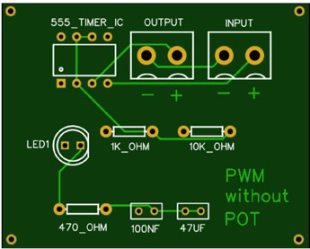
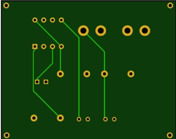

Introduction
We are demonstrating three circuits here
- SCHMITT trigger
- Pulse width modulation
- Adjustable auto on off delay timer

Let us discuss the objectives
- Schmitt trigger – Converts a sinusoidal or non-sinusoidal input waveform into a square waveform with a specify voltage threshold.
- Pulse width modulation (PWM) - It controls the amount of power delivered to a load by varying the width of the output pulse.
- Delay timer circuit - Is a versatile timer circuit that can be used to create a variety of timing functions.
Theory
The 555 timer is versatile and widely used integrated circuit that can be used widely used as a timer, oscillator and flip flop.It was first introduced in 1971 by Cygnetics Corporation and is known as the "IC time machine".CMOS version of the circuit Like Motorola MC1455 is widely used.The integrated circuit is a maze of transistors, transistors and diodes.The figure below shows us the pin diagram of the IC. And now let us discuss the PINS.
- Ground Pin – Ground reference voltage, low level at zero volt.
- Trigger pin - The output of the trigger pin goes high, and a timing interval starts when the input falls below 1/3 Vcc The control voltage deemed two third Vcc by default, if it is left open. In other words, the output pin is high if the trigger is low. The output of the timer totally depends upon the amplitude of the external trigger voltage applied to this pin.
- Output pin – The output is driven to approximately 1.7 volts below +Vcc or to the ground.
- Reset pin – A timing interval may be reset by driving this input to the ground but the timing does not begin again until the reset rises above approximately 0.7 Volts.
- Control pin – Provides controlled access to the internal voltage divider (2/3 Vcc by default).
- Threshold pin – The timing interval (high output) ends when the voltage at threshold is greater than 2/3 Vcc.
- Discharge pin – Open collector output when may discharge a capacitor between intervals.
- Vcc – Supply voltage between +5 V - +15 V.
The figure below will help us explain the working operations.
Circuit Diagram
The voltage divider circuit consists of 3 identical resistors of 5000 Ohm each which creates 2 reference voltages of 1/3 Vcc and 2/3 Vcc, where Vcc is the supply voltage. A comparator compares two analog input voltage at its +ve (non inverting) and -ve(inverting) terminals.
- Case 1 : V+ve > V-ve = comparator output is high(1)
- Case 2 : V+ve < V-ve = comparator output is low(0)
Now, we have 2 comparators,
The upper comparator : non-inverting(+ve) -> Threshold pin
Inverting(-ve) -> 2/3 Vcc
The lower comparator : non-inverting(+ve) -> 1/3 Vcc
Inverting(-ve) ->Trigger pin
Using Trigger, Threshold & Control pin, we can control the output of the comparator which is then fed to the R-S Flip-flop the generates the output based in the table
| S | R | Qn | Qn+1 |
|---|---|---|---|
| 0 | 0 | 0/1 | 0/1 |
| 0 | 1 | 0/1 | 0/1 |
| 1 | 0 | 0/1 | 0/1 |
| 1 | 1 | 0/1 | 0/1 |
The output of the flip-flop is connected to a transistor that acts as a switch providing high current & low impedance output that can drive external loads. When the output of the R-S Flip-flop is high, the transistor turns on and ve-versa.
Experiment 1: Schmitt Trigger
Schmitt Trigger Circuit
ASTABLE working mode of the 555 timer
Astable mode is used to generate continuous stream of pulses. The Schmitt trigger is used to provide hysteresis to the input signal. Let us see the functional diagram to understand the working.
- Pin 2 and 6 are shorted and a sine wave is fed through capacitor.
- Reference voltage of pin 5 (2/3 Vcc) give external voltage to change pulse width
- Pin 4 is connected to Vcc through a resistor and give negative pulses to prevent reset.
Principles of operation
- As R1=R2, voltage drop for both resistors will be Vcc/2.
- Initially for the first comparator,
- Vinverting > Vnon-inverting. Or we can say 2/3 Vcc > ½ Vcc.
For the 2nd comparator,
- Vinverting > Vnon-inverting. Or we can say ½ Vcc > 1/3 Vcc.
So, for the flip-flop s->0 & r->0
3. Let us take an input sine wave with reference voltage 0, it will be shifted by +Vcc/2 dc voltage. We know,
- Lower comparator o/p -> 1 (Vpin-2 < 1/3 Vcc)
- Upper comparator o/p -> 1 (Vpin-6 > 2/3 Vcc)
4.Let us compare the flip-flop states.
- State 1:S=0 , R=0, Qn = as previous
- State 2:For the upper comparator,
- State 3:For the upper comparator,
Vinverting = 2/3 Vcc ,
Vnon-inverting >= 2/3 Vcc
For the lower comparator,
Vinverting = 1/3 Vcc
Vnon-inverting >= 2/3 Vcc or > 1/3 Vcc
Therefore, we have S=1, R=0, Qn=1 & Qn’=0(output)
Vinverting = 2/3 Vcc
Vnon-inverting < 1/3 Vcc or < 2/3 Vcc
For the lower comparator,
Vinverting < 1/3 Vcc
Vnon-inverting = 1/3 Vcc
Therefore, we have S=0, R=1, Qn=0 & Qn’=1(output)
Thus, the circuit turns on and off based on the sine wave. On when voltage < 1/3 Vcc and off when voltage > 2/3 Vcc.
RESOURE UTILISATION.
| Sl no. | Name | Specification | Quantity |
|---|---|---|---|
| 1 | 555 Timer | 4.5 -18 V supply | 1 |
| 2 | DC Source | 9 V cell | 1 |
| 3 | CRO | 300MHz Dual Beam | 1 |
| 4 | Function Generator | 0.3 Hz to 3MHz Frequency | 1 |
| 5 | Breadboard | 1 | |
| 6 | Capacitor | 0.01 uF | 2 |
| 7 | Resistors | 10000 Ohm | 2 |
| 8 | Wires | 10-12 |
IMPLEMENTATION
Applied voltage = +5 V
Width of the output pulse = 2/3Vcc – 1/3 Vcc
= 10/3 *5 – 1/3*5
= 1.6 V (peak to peak)

Fig.4- Circuit Diagram
Fig.5- CRO Output
PCB DESIGN ARE INCLUDED BELOW
Here is the following PCB design for the schmitter trigger
CRITAL ISSUES
- Low tolerance of the lab equipment that affect the performance of the Schmitt Trigger.
- Signal noise – Schmitt Trigger is sensitive to noise and interference of the input sine wave from the function generator.
- Oscillations and instability – Schmitt trigger can oscillate and become unstable if the feedback network does not have sufficient gain and phase margin.
CONCLUSION
We have successfully designed the Schmitt Trigger as we have observed a proper pulsating waveform in the CRO. We acquired the knowledge that Schmitt Trigger is a very useful device as it can provide hysteresis and signal conditioning.Some of its application are :
- Switch de-bouncing : ensures certain circuits respond only to certain valid signals, eliminating false triggers.
- Signal conditioning : analog signals are conditioned thereby detecting threshold, shifting levels etc.
- Thermistor : a temperature sensitive circuit.
Experiment 2: Pulse Width Modulation (PWM)
ASTABLE WORKING MODE of 555 Timer
The astable mode of the 555 timer is a commonly used configuration where the operates as an oscillator, generating a stream of square wave pulses. In this mode, the does not require any external triggering and can generate a train of pulses with a fixed frequency and duty cycle. The astable mode of operation requires 2 external resistors R1 & R2 and a capacitor C as shown in the figure below.
PRINCIPLES OF OPERATION
- When power is applied to the circuit, 555 timer starts in a state where the output is low and the capacitor C1 is un-charged.
- The output of the is connected to a voltage divider formed by R1 & R2 which sets the threshold and trigger levels of the timer. When the voltage reaches the threshold level, the output of the changes to high.
- The capacitor C1 charges through R1 & R2. When voltage across C1 is at trigger level, the output switches from high to low.
- The capacitor C1 discharges through R2 and the discharge pin of the . The cycle repeats to generate a square wave output.
CALCULATIONS
Duty cycle : controlled by voltage divider circuit
T = Thigh + Tlow
Duty cycle = (Thigh /T)*100
Time period :
Ton = 0.693*(R1+R2)*C
T= Toff+Ton
Frequency F = 1/T = 1.44/[(R1+R2)*C]
RESOURCE UTILISATION
| Sl no. | Name | Specification | Quantity |
|---|---|---|---|
| 1 | 555 Timer | 4.5-18 V supply | 1 |
| 2 | DC Source | 9 V cell | 1 |
| 3 | DSO | 1 | |
| 4 | Momentary Push button switch | 1 | |
| 5 | Breadboard | 1 | |
| 6 | Capacitor | 100 nF,47 uF | 1 of Each |
| 7 | Resistors | 47Ω,1Ω,10Ω,22kΩ | 1 of Each |
| 8 | Wires | 15 | |
| 9 | Potentiometer | Max resistance = 60kΩ | 1 |
| 10 | LED | Any Colour | 1 |
IMPLEMENTATION :
For the circuit that we have designed, we have chosen the following components :
- R1 = 1000 Ohm
- R2 = 10000 Ohm
- C = 47 uF
Calculated value
- Ton = 0.693*(1000+10000)*47*10-6 = 358ms
- Toff = 0.693*10000*47*10-6 = 326ms
- T = Ton + Toff = 684 ms
Observed value
- Ton = 4 small divisions = 400ms
- Toff = 3 small divisions = 300ms
- T = Ton + Toff = 700 ms
Error = 16/700 * 100 = 2.258 %
PWM Breadboard Circuit
PWM DSO OutPut
If we vary R2 by repalcing R2 with a potentiometer, then we can adjust the values of TOn and Tof.
Now you can see the circuit along with the output of PWM using a potentiometer and the output are attached below.
output
output
output
PCB Designs
After the implementations there are the PCB designs of the circuit along with the schematics of …...
Without POT Front Side
Without POT Rear Side
CRITAL ISSUES
- Low tolerance of the lab equipment, it is essential to use high quality materials for more accurate output.
- Output voltage limitations – for loads that require high voltages, we need additional amplification or voltage regulator circuits.
- Output current limitations – output current of a few mA is not sufficient for most loads. We need additional buffer or driver circuits to boost the current output
CONCLUSION
We have observed in the calculation table that our observed output is almost identical to the calculated values.
Hence, we conclude that our design and implementations were successful.
We came to know that 555 Timer can be used to generate PWM signals and find application in :
- Motor Speed control
- Light brightness control
- Power management
Experiment 3: Delay Timer
ADJUSTABLE AUTO ON-OFF DELAY TIMER
Monostable working mode of the 555 timer IC Monostable mode of the 555 timer IC is also called a single shot mode. In this mode, only one state is stable and the other is unstable. An external trigger is required for transition from stable to un-stable state. This external trigger is provided by connecting Trigger pin to the ground via a switch. The monostable working mode is depicted in the figure below.
Delay Circuit
Principles of operation
Delay timer is activated by pressing the push button switch.
- 0 Volt is applied at pin 2(Trigger) via a switch.
- Voltage at pin 2 < 1/3 Vcc -> output turns on.
- Discharge pin is disconnected simultaneously, internally from 0 V.
- Now the capacitor starts to charge via the resistance or the potentiometer via the +ve rail.
- Threshold(pin 6) connected to the +ve terminal of the capacitor actively monitors the voltage across it.
- Capacitor charges from 0 V to 2/3 Vcc -> Pin 6 turns off.
- The time elapsed while the capacitor charges from 0 V to 2/3 Vcc is called the ‘Delay time’.
- As soon as Pin 6(output) turns off, Pin 7 is internally connected to 0 V and the capacitor discharges completely.
These steps are repeated every time the switch is pressed.
Calculations
Time taken by the capacitor to charge from 0 V to 2/3 Vcc is given by
- T = 1.1 * R*C
For the circuit we designed, we have chosen the following values.
- R = 22 k Ω
- C = 470 uF
Calculated delay time
T = 1.1 * 22 * 103 * 470 * 10-6
= 11.374 s
Observed delay time
T = 13.37 s (stop clock value)
Error = (13.37-11.374)/11.374 = 17.54 %
ouput
output
RESOURCE UTILISATION
| Sl no. | name | specification | quantity |
|---|---|---|---|
| 1 | 555 timer | 4.5 V supply | 1 |
| 2 | DC Source | 9 V cell | 1 |
| 3 | DSO | 1 | |
| 4 | Momentary push button switch | 1 | |
| 5 | Breadboard | 1 | |
| 6 | capacitor | 470 uF | 1 |
| 7 | Resistors | 470 Ω , 10 k Ω , 22k Ω, 68 kΩ | 1 of each |
| 8 | Wires | 15 | |
| 9 | LED light Any colour | 1 |
Implementation
You can observe the circuit in the following part.
In the circuit, we have chosen a fixed capacitor of 470 uF (due to unavailability) and we have varied the resistance to obtain various timing delays. Some of the common time delays are :
| R (k Ω) | C (uF) | Time Delay |
|---|---|---|
| 33 | 470 | 15s |
| 68 | 470 | 30s |
| 122 | 470 | 1 min |
| 320 | 470 | 2.5 min |
| 800 | 470 | 7.5 min |
PCB design are below :

PCB Front Side
PCB Rear Side
Critical issues :
Problems encountered in the laboratory are :
- Component selection : unavailability of varying capacitance.
- Caliberation : Tedious process to caliberate the circuit properly to obtain perfect time delay.
- Circuit layout : Long traces or poor grounding can introduce noise and cause instability.
Conclusion
We have observed that the time calculated theoretically and the stop-watch value is quite similar. Hence, we can conclude that the design is correct. However, its important to note the fact that error in our observation is due to the factors like component tolerance, external temperature and others. We also learnt that delay timer find application in various industries and electronics like :
- HVAC – Heating, ventilation and air-conditioning controls.
- Motor control – like that in a washing machine.